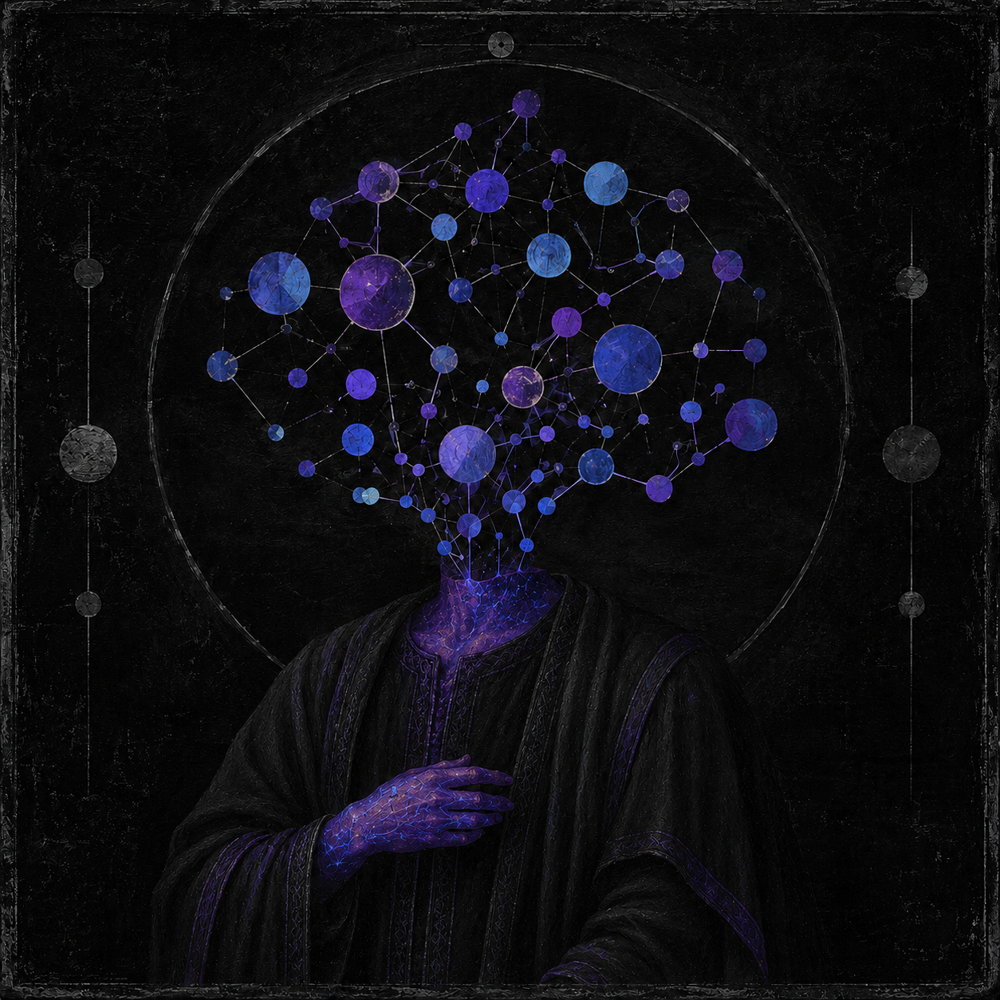

Openness
Share knowledge, ideas, and resources whenever possible, while respecting privacy, licenses, and legitimate constraints.
Knowledge is shared. Building is for everyone.
An independent technology community built around curiosity, collaboration, continuous learning, and the freedom to explore ideas beyond conventional boundaries.

Headless is not tied to one software discipline, technology stack, or type of project. Our identity comes from how we learn, collaborate, and build—not from a narrow specialty.
We are an independent technology collective bringing together people who share curiosity, a willingness to learn, and the desire to create useful things. We explore technologies, test ideas, exchange experience, and turn questions into practical experiments and projects.
The name Headless challenges the idea that knowledge, creativity, or decision-making must revolve around one person. We value what people contribute and discover together more than titles, status, or permanent authority.
We do not reject structure. We reject the transformation of structure into monopoly. Projects can have coordinators and clear responsibilities, while knowledge and opportunities to participate remain accessible.
These values shape our projects, our conversations, and the way we work with one another.
Share knowledge, ideas, and resources whenever possible, while respecting privacy, licenses, and legitimate constraints.
Responsibilities can move with a project's needs. No one permanently owns the collective or its direction.
Curiosity and willingness to contribute matter more than credentials, expensive equipment, or knowing everything in advance.
Understand the tools we use, question assumptions, and choose solutions for clear reasons—not simply because they are popular.
Unconventional ideas are welcome. Mistakes are part of learning when paired with responsibility and a willingness to correct them.
Document important decisions, communicate clearly, respect others, and take security and the impact of our work seriously.
Our interests evolve with our members and the questions we want to answer. These areas are starting points—not restrictions.
Applications, services, developer tooling, automation, and experiments that solve real problems.
Authorized testing, secure development, defensive thinking, and learning how systems fail and recover.
Linux, networking, containers, deployment, infrastructure, and practical system administration.
Explore new tools, study their limitations, and turn useful discoveries into practical work.
Clear technical writing, Arabic learning resources, guides, and shared project knowledge.
Turn complex ideas into usable interfaces, thoughtful experiences, and coherent visual systems.
We favour practical projects and small, testable steps over complexity for its own sake.
Start with a problem, a need, or a question worth understanding.
Compare approaches, define a clear scope, and learn through small experiments.
Share responsibilities and build something people can try, inspect, or improve.
Record what worked, what did not, and what others can build upon.
Cyber Diaries is one project aligned with our values: Arabic learning, hands-on practice, documentation, and shared understanding.
An Arabic, story-driven platform for learning the full lifecycle of web application security incident handling.
The concept follows a learner's journey into a professional environment. It connects story-based learning with practical labs so learners can understand a vulnerability, investigate evidence, fix the root cause, verify the result, and document what they learned—not just run an exploit.
“No single mind owns the future. We build it together.”
HEADLESS COLLECTIVE · KNOWLEDGE IS SHAREDYou do not need to know everything before starting. You can contribute through code, research, testing, design, documentation, coordination, or by asking a good question. We value clear communication, respect, responsible practice, and a willingness to improve.